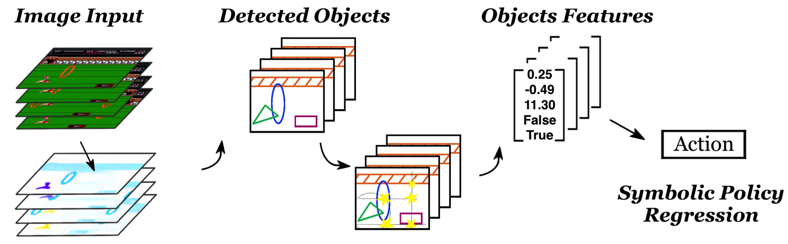

This paper presents DiffSES, a framework that learns and generates symbolic policies for a visual environment. An example of symbolic policy generated for the Pong-Atari2600 environment is shown below:
The generated symbolic policy takes the form of a forest of Naction symbolic trees (above is one such tree, the other trees take similar structures), each tree corresponds to one action, whose execution value represents the probability for this action (pre-normalization), same as the neural networks based agents.
The DiffSES is developed from object level abstraction of the scene, rather than raw pixel level, or higher level of text planning as previous works did. It uses an unsupervised object detection module to discover objects in the current frame, and learn/search symbolic expressions to discover meaningful objects and features.
In this way, the inputs to the learned symbolic expression are object features. The leaf nodes X0, X1, ... are the relabeled objects' positions and velocities. Such symbolic expressions offer potential explanability of the controlling policy: some subtrees might happen to constitute geometrically interpretable meanings.
For example, the geometric features (leaf nodes) X0, X1, ... could be xpong, xracket, ypong, vy,pong, the x/y location of the pong and the racket, and vertical velocity of the pong. Then one subtree might appear as: ypong + vy, pong * (xracket - xpong)*c. This could mean the y axis of the aiming point of the pong on the racket, where c is some constant to convert the horizontal distance into time gap. The aiming point is where the racket should ultimately go to. If such sub-expressions are found, it could hint that similar logic is learned.
The inference procedure of the learned symbolic policy is shown in the figure below.
